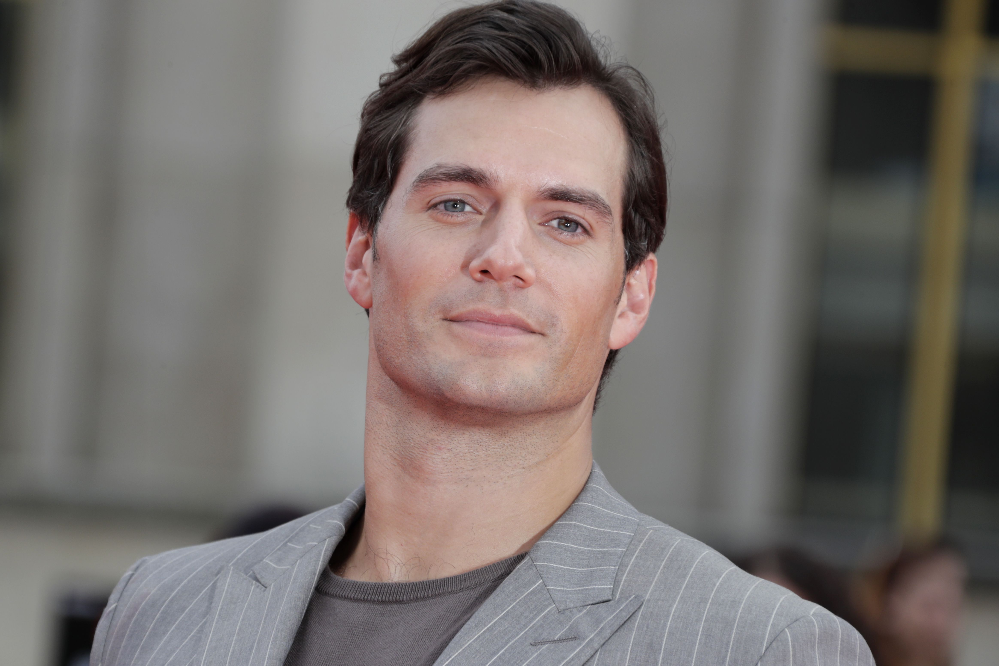
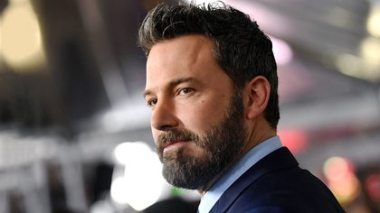
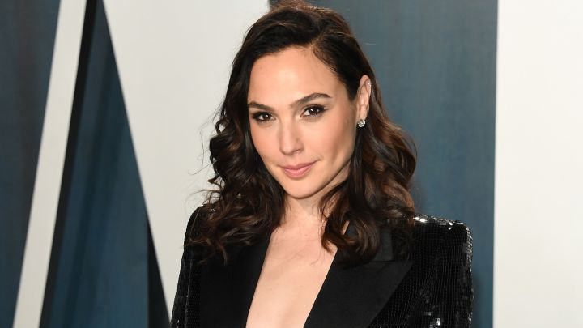
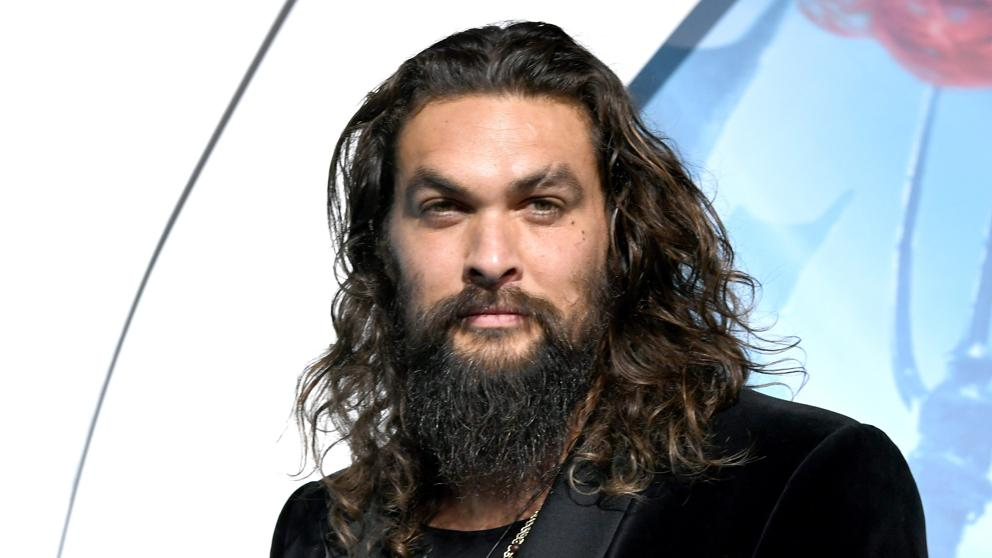
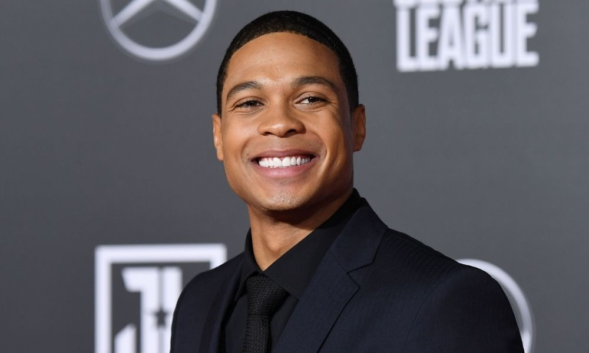
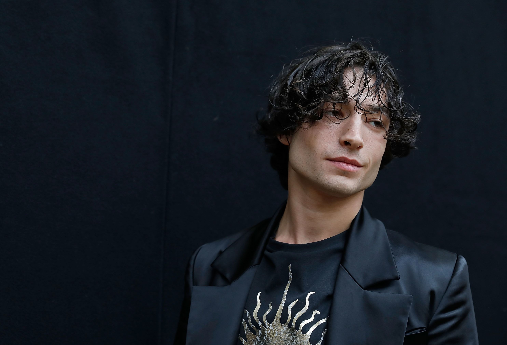

| Actor |
Foto |
Información |
| Henry Cavill - Superman |
 |
Acerca de:
Henry William Dalgliesh Cavill es un actor británico. Inició su carrera profesional
con la película Laguna.
|
| Ben Affleck - Batman |
 |
Acerca de:
Benjamin Geza Affleck-Boldt, conocido como Ben Affleck, es un actor, productor,
guionista y director estadounidense.
|
| Gal Gadot - Wonder Woman |
 |
Acerca de:
Gal Gadot Varsano es una actriz, productora y modelo israelí.
|
| Jason Momoa - Aquaman |
 |
Acerca de:
Joseph Jason Namakaeha Momoa es un actor, actor de voz, escritor, productor y
director estadounidense.
|
| Ray Fisher - Cyborg |
 |
Acerca de:
Ray Fisher es un actor estadounidense. Es más conocido por interpretar a
Cyborg en las películas del Universo extendido de DC.
|
| Ezra Miller - Flash |
 |
Acerca de:
Ezra Matthew Miller es un actor, músico, cantante y activista estadounidense.
|